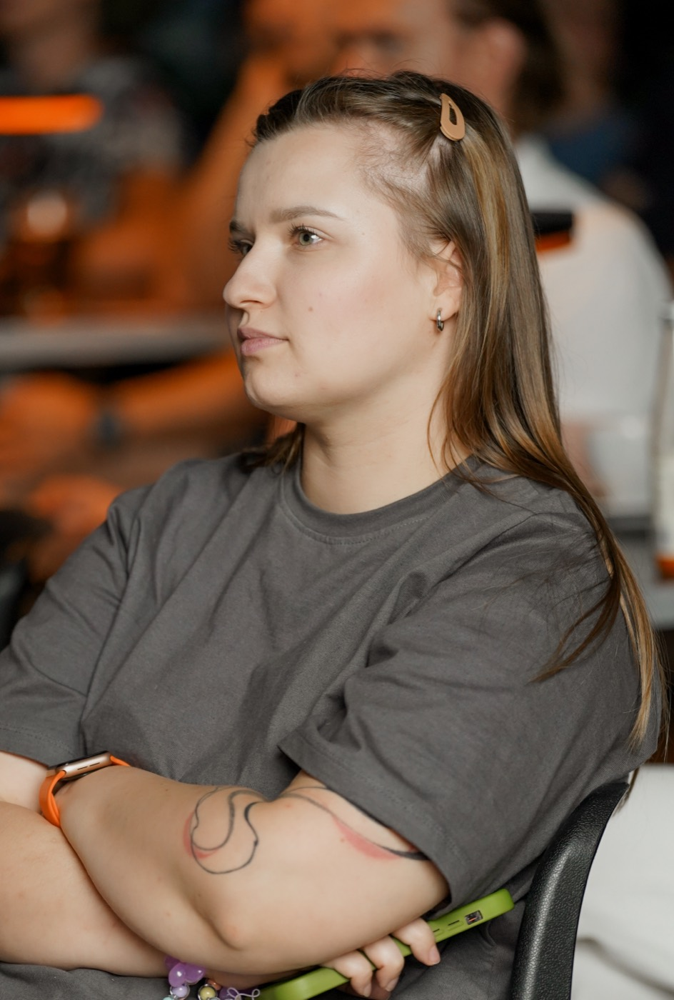
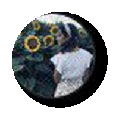

🌱 One-to-one lessons
Format60 minutes
PackagePackages of 5, 10 or 20 lessons · 20 lessons – 7000 SEK
390 SEK / lessonSign up
Online Swedish courses, materials and mini-lessons for adults who want to do more than just “study a language” – to speak, understand and feel more confident in a Swedish-speaking environment.

For Ukrainian-speaking adults who want to learn Swedish in a modern way – through conversation, culture and a system.
For those starting from scratch
For those who find SFI isn’t enough
For those who want to feel at ease in Swedish
For those who want to progress at work
I don’t build my teaching around dry rules. We take a real topic, add the vocabulary you need, see the grammar in action, speak, listen and gradually put Swedish together into a system.
We don’t just “work through a topic” – we learn to speak, understand, react and use Swedish in real life.
We don’t memorise rules for the sake of rules. We learn to see language patterns so that Swedish becomes logical and natural.
Words don’t live on their own. So instead of “word – translation”, we learn phrases and ready-made chunks of language that you can use straight away.
Swedish isn’t just words and grammar. It’s also culture, traditions, everyday life and the way Swedes talk to each other.
My own collections, explanations and texts that help you stay in touch with Swedish even between lessons.
One-to-one, in pairs or in a group – and also self-study courses if you need a different format.
Full lessons on topics that people in Sweden really talk about: from lagom and fika to psychology and real spoken phrases. Text, vocabulary, exercises and tasks – everything ready for the lesson.

What lagom really means – a word that explains a lot about the Swedish character. You read its story, work out where “in moderation” is appropriate, and together come up with tips for a newcomer: how to be lagom at work, in the neighbourhood or at a celebration.

Is it normal to talk to strangers on the bus – and which unwritten rules apply in Swedish public spaces? You learn to talk about rules with får, måste, behöver inte and brukar, and write a short scene about a small misunderstanding.

Fredagsmys – a cosy Friday evening that Swedes treat almost as a ritual. You read about this tradition, learn adverbs of frequency (alltid, ofta, ibland, sällan, aldrig) and plan the perfect Friday together.
A monthly PDF magazine in Swedish, a podcast for learning the language – and the Slow Swedish Morning Show, which is starting soon. You can download the first issue of the magazine for free.
I’m a teacher of Swedish for adults. I combine language, culture, structure and real conversation – and I create materials and courses for Ukrainian-speaking adults who want to learn Swedish in a warm, modern and practical way.
I’m drawn to the idea that language is not an exam or a stack of textbooks, but a way to enter another culture, feel it from the inside and start communicating for real. Over my years of work I’ve realised the most important thing: people start speaking not when they’ve learned all the rules, but when they feel that the language is alive, logical and “theirs”.
Swedish is warmer than it seems: it has a lot of logic, rhythm and words that are intuitively clear. And behind it lies a whole culture – fika, lagom, calm, and respect for people and for time. To learn Swedish is to gradually start thinking a little differently.
“I don’t build my teaching around dry rules. We take a real topic, add vocabulary, see grammar in action – and speak.”Choose a course
Adult learning without pressure, grades or the fear of making mistakes.
A clear structure instead of chaotic lessons.
Language you actually start using.
Not just words – a way of thinking and living.
Students’ own words – from YouTube comments and private messages.
“Thank you for such an interesting lesson! 😍”
Translated from Ukrainian
“Adding my thanks for your work ✍️📋💪👍🔥🙂”
Translated from Ukrainian
“Thank you so much. Wonderful lessons.”
Translated from Ukrainian
“I really want to thank you for your efforts. I really like how simply and clearly you explain the material – you can see that you love it. I’m glad the lessons are recorded, because my memory sometimes really lets me down 😂🙈 I think that, with our combined efforts, I’ll learn the language quickly – well, at least I hope so 😅 It was lovely to see your cat in the video – it really lightens the mood 🐈”
Translated from Ukrainian

Аля“Thank you for the lessons, they’re super cool 🐱 I can’t make it on time – I watch them on YouTube because I work( But thank you so, so much ❤️”
Translated from Ukrainian
“Thank you for the lessons 🙏 simple, clear and very sincere ❤️”
Translated from Ukrainian
Start with a course or a ready-made lesson.